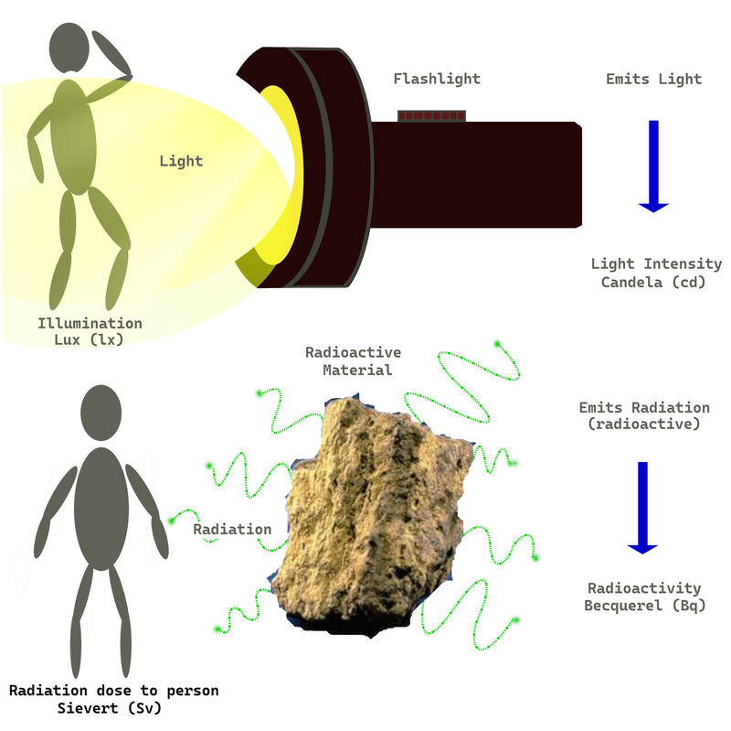

Good morning. My name is Masako Tachibana. I have lived in Koga City, Japan, for 40 years.
Eight years ago, in June 2017, I visited Hanami Elementary School in Koga for the planting of a camphor tree—“Kusu no Ki,” a symbol of peace from Nagasaki—near the school entrance. It has grown large, hasn’t it?
At that time, I was given the opportunity to give a speech.

This camphor tree comes from Sanno Shrine in Nagasaki, located about 800 meters from the hypocenter where the atomic bomb was detonated. At Sanno Shrine, standing on one pillar, there remains a torii gate that has been blown in half from the blast. Behind it stands a huge camphor tree estimated to be 4,500 years old.

Scorched black by heat, its survival was in doubt. Although it was said that no plants would grow there for 75 years, amazingly, it sprouted new buds only two months later, and for the citizens who had been devastated, its strong life force became a source of courage and hope.

Saplings grown from its seeds were distributed to people around the world—the camphor tree planted at Hanami Elementary School is one of them. Other offspring from the tree have also been planted at Koga City Hall and in elementary and junior high schools around the city.
 These are the paper cranes I received from the students and teachers at that time I visited.
These are the paper cranes I received from the students and teachers at that time I visited.
I have carefully kept them.
 The map of Nagasaki displayed here was drawn by one of my seniors from the high school I attended in Nagasaki. He would use this hand-drawn map when He spoke as a storyteller about the bombing.
The map of Nagasaki displayed here was drawn by one of my seniors from the high school I attended in Nagasaki. He would use this hand-drawn map when He spoke as a storyteller about the bombing.
He told me, “Tachibana-san, when I can no longer do this, I’m counting on you,” before he passed away. It has now been nine years since I inherited this map and his role as storyteller.
I was born on June 24, 1943, in Kamikojima, near Hamano-machi, the downtown district of Nagasaki. I turned 82 this year and I was two years and one month old when I was exposed to the atomic bombing. Everyone, do you remember anything from when you were two years old? I do not remember.
But many of you can probably imagine what you were like as a small child, based on stories your parents and grandparents told you; that you were mischievous, ate well, cried a lot, and ran around everywhere.
I did not have those stories, and I will explain later.
Eighty years ago: Hiroshima on August 6 at 8:15 a.m.,
Nagasaki on August 9 at 11:02 a.m.
Atomic bombs were dropped.
At that time, the population was: Hiroshima—350,000 people,
Nagasaki —240,000 people.
Those who died: Hiroshima—140,000 people,
Nagasaki—70,000 people (73,884 numbered by the end of 1945).
This year, 2025, the remaining number of A-bomb survivors is 99,130 people
Last year, 2024, it was 106,825 (a decrease of 7,695 people).
As survivors continue to age, the number of deaths will surely increase further.
In Hiroshima 48,310 survivors remain.
In Nagasaki 23,543 survivors.
Many of the survivors have moved to other cities.
In Fukuoka there are 3,957 survivors, and I am one of them.
In Tokyo 3,307.
In Osaka 3,186.

Do you know that the types of atomic bombs dropped on Nagasaki and Hiroshima were different?
Hiroshima: Uranium — Uranium-235 (a naturally occurring mineral)
Nagasaki: Plutonium — Plutonium-239 (an artificial element)
Between uranium, made from a natural substance, and processed plutonium, which do you think created the more powerful explosion?
The Nagasaki bomb had fifteen times the force of the Hiroshima bomb. So why were there fewer victims in Nagasaki?
Has anyone here been to Nagasaki? Nagasaki is surrounded by small hills and has very little flat land. Hiroshima, however, is in the middle of a broad, flat plain. I understand this well because I have attended the memorial ceremonies.
The bomb’s first target was Kokura in Kitakyushu, but it was covered by clouds that day.
Next target was the center of Nagasaki (around Hamano-machi), but it was cloudy there too.
There was a break in the clouds over Urakami, less than 5km north, so the bomb was dropped there.

☆ You often hear words like radiation, radioactivity, and radioactive materials in the news, but they are hard to understand, aren’t they?
I will explain simply by using a flashlight as an example:
 The flashlight itself would be radioactive material.
Its ability to emit light would be radioactivity.
The light that comes out would be radiation.
What is dangerous is the action of the radiation. Radiation passes through the inside of matter. It also does useful things—such as X-rays.
Harmful effects? You all know that our bodies are made of groups of cells.
Do you know how many cells we have? It is said to be 37.2 trillion.
There are many cells, some minor, and some greater, like the stem cell, the boss of cells. You will study this in junior high school.
Inside each cell, from least to greatest, is a nucleus where the genes are stored. You have heard of DNA or genes, I’m sure. Genes contain the blueprint of who we are.
Even though we eat meat and fish, we do not become cows, pigs, or chickens. When you make something, you always need a blueprint. Our genes tell our bodies what kinds of cells to make, but radiation damages that blueprint.
If the damage is not repaired and becomes copied as-is, it spreads to the organs and blood, and over the years greatly increases the chance of leukemia and cancer.
I also developed cancer twelve years ago. Because it was found early, I am able to live healthily like this.
When I later developed Sweet’s disease (a rare illness), I feared I was finally becoming leukemic, and my feelings were complicated. But it was also detected early, and I am living in good health now.
Now, let me talk about myself.
On August 9, when the bomb was dropped on Nagasaki, I was two years and one month old. At that time, I was being carried by my mother on the way to my father’s family home in Nishizaka Town when I was exposed to the bomb.
Nishizaka Town is in front of Nagasaki Station, on the slope of a small hill, 2.2 km from the hypocenter. At that moment, my mother was probably facing the hypocenter in Urakami. I was in the shadow of my mother.
Although my mother was injured and fire was burning the area, she desperately made her way through the sea of flames, without trains or buses, back to our home in Kamigojima.
That same mother passed away on August 30, that same month. The crematorium had burned down, so around what is now Chuo Bridge, they collected the remaining unburnt wood and cremated her.
It must have been similar to an open air cremation from those times, but I have no memory of it.
After my mother died, my father remarried, and I have three younger brothers. Perhaps thinking of my stepmother and brothers‘ honor, in our house the war and the atomic bomb were never discussed.
It was in the summer of my third year of high school, around the time I took employment exams, that my father took me to my mother’s grave and told me for the first time about everything that had happened.
Even though this was hard news, I was not that surprised. Since first or second grade, I had felt that my home was a little different from others. I did not have the courage to ask about it. Surely, as a child, I thought it was better not to ask in order to protect myself. Because of this I never spoke or asked about my mother.
When I was 21, a fire in the neighbor’s house spread, and I lost everything. Surely, there must have been photos of my birth mother, but nothing remains. I do not even know my mother’s face. Even at this age, it fills me with deep sadness.

☆ I still vividly remember something from my first year of elementary school.
It was five years after the war, in 1952. There was a girl in my class who often missed school.
At that time, students who missed school were sent their school lunch bread (koppepan) at home. (They do not do this anymore.) I was assigned to deliver the bread.
That child’s house was said to be located at Sōfuku-ji, whose temple gate is a national treasure. Sōfuku-ji was built by Chinese immigrants with thoughts of their homeland. Inside the temple, there were graves and large, overgrown trees—there was no house at all.
I became scared and called her name loudly, over and over, but there was no response.
Then, suddenly, her younger brother or sister ran out, snatched the bread I was carrying, and devoured it. I was completely shocked.
Looking around, I saw no houses, and wondered where they came from—there was something like a small shed. The gravestones of the cemetery served as the house’s pillars, and pieces of wood from burned sites were used as the roof. Of course, there was no bath. Because I often played with that child, I caught lice from them.
As a child, I wondered why such differences existed. I remember continuing to deliver the bread until the classes changed. This is one of my sad childhood memories.
☆ Around that time, I often attended funerals with my father. Adults whispered, “The way they died is strange,” as they talked. At that time, the effects of radiation sickness were not yet understood.
☆Hamano-machi, Nagasaki’s busiest shopping street, was less than ten minutes from my home. I would go there often throughout my life, during junior high, high school, and work.
At that time, it had been about ten years since the bomb was dropped. I passed many people with keloids on their faces and limbs, missing hair, ears, or limbs, or walking with crutches. No one pointed, turned to stare, or spoke abusive words. If we met on trains or buses, people would discreetly give up their seat for these people.
☆ A close classmate of mine suddenly passed away at a young age from leukemia, leaving behind a very young child. She had been farther from the bombing than I had.
☆ Sumiteru Taniguchi. Since he was exposed to the bomb, you might think he was from Nagasaki. He was actually from Fukuoka, born in Saitozaki.
At one and a half years old, he lost his mother and was left with his grandparents at his mother’s home (at the foot of Mount Inasa), while his father went to Manchuria, now China.
At 16, while working at the post office and delivering telegrams, he was exposed from behind, suffering severe burns on his back. He could only sleep face down, developed bedsores, and his chest was gouged. He was hospitalized for three years and nine months.
His injuries were so severe that the U.S. Strategic Bombing Survey took photographs of him.
During treatment, he experienced excruciating pain; the flesh on his back and chest rotted and fell off, and maggots burrowed into the flesh between bones in his left arm. Nearby, doctors would whisper in astonishment, “He’s still alive today.”
In 1970, at age 41, he was shown this photograph and realized the photograph was of him, and from then on, he became involved in peace activism. He gave a speech at the United Nations with his own photograph.
He passed away in 2017 at the age of 88.
☆ Senji Yamaguchi. In fact, I met him many times in the Hamano-machi shopping district. I remember seeing him while going to junior high, high school, and work.
Around ten years after the war, in junior high, Yamaguchi had severe burns, and about 12–13 years after the war, his face still showed the raw scars.
Because of the bomb he suffered severe bruns. Even 12-13 years after the war, in junior high, his face still showed the raw scars.
That image is still burned into my memory. It became a support for my heart.
Before the atomic bombs were dropped on Hiroshima and Nagasaki, on June 19, Fukuoka City suffered a major air raid, with 902 dead and 244 missing.
In this war, 2.1 million soldiers and 800,000 civilians died—a total of 2.9 million—and even more were injured.
We humans are living beings. Where there is life, death inevitably comes.
I believe the best death for a human is a natural one, from old age.
It is outrageous to lose life in war.
As you know, weapons have advanced. It is said that their power is tens of times greater than the bombs in Hiroshima and Nagasaki.
As of January 2025, there are 12,241 nuclear weapons in the world, held by nine countries. The countries are: the United States, the United Kingdom, France, India, China, Russia, Pakistan, Israel, and North Korea.
To annihilate Japan, I think only a few would be needed. Not only Japan, but the whole world and the planet would be destroyed.
Peace may sound like a difficult word. Peace begins in familiar, everyday places...
Being able to say “Thank you...”
Being able to say “I’m sorry...”
These small acts of heart become seeds of peace. Please cherish and nurture these seeds. If everyone’s kindness gathers, the world will surely become brighter.
Peace begins in the familiar and continues into your future.
Thank you for listening to my humble story.

☆ "Where Did the Boy Standing at the Cremation Ground Go?"
This book was given to me by my home doctor, the director of Miyagi Hospital in Fukutsu.
The person who took this photograph is Joe O’Donnell. He was a U.S. Marine and came to Japan as a photographer for the occupying forces. He documented the conditions of the affected areas, including Hiroshima and Nagasaki.
On October 3, 2020, NHK broadcasted a special called “Searching for the Boy Standing at the Cremation Ground.”
If kindness gathers, the world will surely become brighter. Peace begins in the familiar, everyday places…
And it will continue into your future.
Thank you for listening to my humble story.
-Tachibana Masako
☆ Account by Joe O’Donnell, the photographer of “The Boy Standing at the Cremation Ground”
I saw a boy about ten years old walking by. He was carrying a baby on his back. In those days in Japan, we often saw children playing with their little brothers or sisters on their backs, but this boy was clearly different. I could see that he had come to this place for a serious reason. He was wearing no shoes. His face was hard. The little head was tipped back as if the baby were fast asleep. The boy stood there for five or ten minutes.
The men in white masks walked over to him and quietly began to take off the rope that was holding the baby. That is when I saw that the baby was already dead. The men held the body by the hands and feet and placed it on the fire. The boy stood there straight without moving, watching the flames. He was biting his lower lip so hard that it shone with blood. The flame burned low like the sun going down. The boy turned around and walked silently away.
— Joe O'Donnell[3]
Tachibana Masako was born in Nagasaki, 1943. She currently lives in Koda, Fukuoka.
Image Sources: